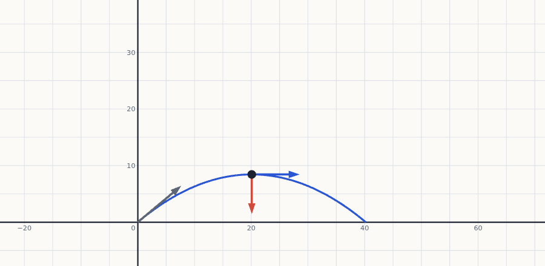
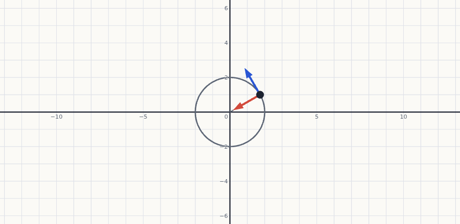
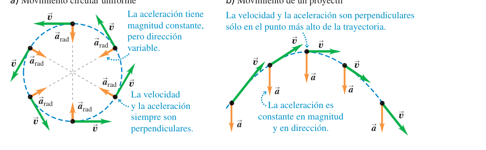
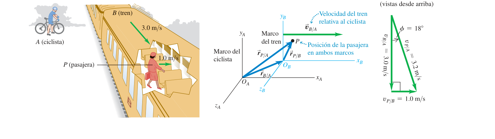

Movimiento en dos o en tres dimensiones
Todo lo del tema 2, pero ahora en un plano (o en el espacio): posición, velocidad y aceleración se convierten en vectores, y de ahí salen directamente los proyectiles, el movimiento circular y la velocidad relativa.
El tema en 5 minutos P
Es el tema 2 en un plano, con flechas. Posición, velocidad y aceleración pasan a ser vectores y cada componente se trata como un movimiento rectilíneo aparte, unidos solo por el reloj $t$. Lo realmente nuevo es una idea: la aceleración tiene una parte que cambia lo rápido que vas y otra que cambia hacia dónde vas. De ahí salen los tres casos que cuentan: el proyectil (aceleración constante $-g$), el círculo (aceleración que apunta al centro) y la velocidad relativa (sumar vectores entre observadores).
Necesitas: del tema 1, componentes de un vector, módulo y ángulo con el cuadrante correcto; del tema 2, derivar $x(t)$ y las ecuaciones de aceleración constante. U usa $g=9.80\ \text{m/s}^2$; los exámenes suelen dar $9.81$.
El método en 4 pasos (para cualquier problema del tema)
Las 6 fórmulas que hay que saber
| Fórmula | Cuándo se usa |
|---|---|
| $\vec v=\dfrac{d\vec r}{dt},\quad \vec a=\dfrac{d\vec v}{dt}$ (componente a componente) | Te dan $x(t)$, $y(t)$ y piden velocidad o aceleración en un instante (E1). |
| $a_\parallel=\dfrac{\vec a\cdot\vec v}{v},\quad a_\perp=\sqrt{a^2-a_\parallel^2}$ | «¿Acelera, frena o gira?»: $a_\parallel$ cambia la rapidez, $a_\perp$ la dirección (E1). |
| $x=x_0+v_{0x}t,\quad y=y_0+v_{0y}t-\tfrac12gt^2$ | Cualquier proyectil: tiempo de vuelo, alcance, posición en un instante (E3, E4, X3). |
| $v_x=v_{0x},\quad v_y=v_{0y}-gt$ | Velocidad (módulo y ángulo) en un instante; cima ($v_y=0$) e impacto (E3, E4). |
| $a_{\text{rad}}=\dfrac{v^2}{R}=\dfrac{4\pi^2R}{T^2}$ | Movimiento circular: centrifugadora, noria, curva; «cuántas $g$» (E5, X2). |
| $\vec v_{P/A}=\vec v_{P/B}+\vec v_{B/A}$ | Río, viento, tren, dos observadores: suma con signo en 1D, vectorial en 2D (E6, X1b). |
La altura máxima $h=v_0^2\sin^2\alpha_0/2g$ y el alcance $R=v_0^2\sin2\alpha_0/g$ solo valen si salida y llegada están a la misma altura (§3 y chuleta).
Qué cae en examen
Hay 3 preguntas de examen real de este tema, todas resueltas aquí: una teoría de 4 puntos sobre «Movimiento de proyectiles», con dos cuestiones sobre las dos balas y la semilla del pájaro (X1); otra teoría sobre «Movimiento en círculo», con cuestiones sobre cómo varía $a_{\text{rad}}$ y la velocidad media en una vuelta (X2); y un problema de 3 puntos en el que un cohete de fuegos artificiales explota en su punto más alto y sus dos fragmentos caen como proyectiles horizontales (X3, mezcla con el tema 8). Las ideas del tema (separar ejes, $a_{\text{rad}}$, sumar velocidades) reaparecen además en Newton, energía y rotación. X ×3
Elige tu ruta
Esta página + lo marcado 🔴 imprescindible + ejercicios del bloque «Núcleo» (con el problema de examen).
Todo lo anterior + 🟡 conveniente + bloque «Práctica» + las dos preguntas de teoría X1 y X2.
Chuleta, errores frecuentes, lista de comprobación y X3, E4 y E6 sin mirar la solución.
¿?¿Qué tipo de problema es? 🔴 P
Lee el enunciado, busca la pista en la primera columna y ve directo al método y al ejercicio modelo.
| Si el enunciado dice… | Haz esto | Ejercicio modelo |
|---|---|---|
| «$x(t)=\ldots$, $y(t)=\ldots$», «velocidad y aceleración en $t=\ldots$», «¿acelera, frena o gira?» | Deriva cada componente; $a_\parallel=\vec a\cdot\vec v/v$ y $a_\perp=\sqrt{a^2-a_\parallel^2}$. | E1 |
| «se lanza con $v_0$ a un ángulo», «altura máxima», «alcance», «velocidad en la cima» | Descompón $v_0$; $x$ uniforme, $y$ con $-g$; cima ⇒ $v_y=0$; mismo nivel ⇒ $t_{\text{vuelo}}=2t_{\text{subida}}$. | E4, E2 |
| «sale horizontalmente de una mesa / acantilado», «golpea el suelo en…» | $v_{0y}=0$: $t=\sqrt{2h/g}$ (solo depende de la altura) y $x=v_0t$. | E3 |
| «explota / se rompe en lo alto», «caen al mismo tiempo», «distancia entre los puntos de caída» | Cantidad de movimiento (tema 8) para las velocidades; «mismo tiempo» ⇒ $v_{0y}=0$ en los dos; cada trozo es un lanzamiento horizontal; sentidos opuestos ⇒ suma las distancias. | X3 |
| «gira a $n$ rev/s», «periodo», «aceleración centrípeta», «cuántas $g$» | $T=1/f$; $a_{\text{rad}}=4\pi^2R/T^2=v^2/R$; radio en metros. | E5 |
| «río», «viento», «tren», «respecto al agua / al suelo», «ida y vuelta» | $\vec v_{P/A}=\vec v_{P/B}+\vec v_{B/A}$; tramo a tramo con su signo; en 2D, triángulo de velocidades (§5). | E6, §5 |
| «Desarrolle el tema “Movimiento de proyectiles”» | Guion: modelo → ejes independientes → ecuaciones → cima, altura, alcance → cuestiones con las dos balas y los dos observadores. | X1 |
| «Desarrolle el tema “Movimiento en círculo”» | Guion: $a$ siempre hacia el centro → $a_{\text{rad}}=v^2/R$ → periodo → no uniforme → cuestiones de proporcionalidad y de «media» en una vuelta. | X2 |
1Vectores de posición y velocidad 🔴 U p.67-70
🎯 Antes de leer: para describir el movimiento de un cuerpo en un plano, ¿cuántos números necesitas para dar su posición en un instante? ¿Y su velocidad? (Piénsalo 20 s; la respuesta está en esta sección.)
Idea: en el tema 2 la posición era un número con signo; si el movimiento no es una recta hace falta una flecha. El vector de posición $\vec r$ va del origen a la partícula y cada componente vive su propia vida: $x(t)$, $y(t)$ y $z(t)$ solo comparten el reloj.
$$\vec r = x\hat\imath + y\hat\jmath + z\hat k \qquad \vec v_{\text{med}} = \frac{\Delta\vec r}{\Delta t}=\frac{\vec r_2-\vec r_1}{t_2-t_1}\qquad\text{(ec. 3.1-3.2)}$$La velocidad instantánea es el límite de la media cuando $\Delta t\to0$: la derivada del vector, que se hace componente a componente. Su módulo es la rapidez:
$$\vec v = \frac{d\vec r}{dt}\quad v_x=\frac{dx}{dt},\ v_y=\frac{dy}{dt},\ v_z=\frac{dz}{dt}\qquad v=\sqrt{v_x^2+v_y^2+v_z^2}\qquad\text{(ec. 3.3-3.6)}$$Y una propiedad geométrica que se usará todo el tema: $\vec v$ es siempre tangente a la trayectoria y apunta hacia donde irá la partícula un instante después (fig. 3.4 de U).
Ejemplo mínimo (propio): $\vec r=(2t,\ t^2)$ m. Derivando, $\vec v=(2,\ 2t)$ m/s; en $t=3$ s, $\vec v=(2,\ 6)$ m/s, $v=\sqrt{2^2+6^2}=6.32$ m/s a $\arctan(6/2)=71.6°$ sobre el eje $x$.
U p.67-69Un vehículo sigue $x(t)=2.0\ \text{m}-(0.25\ \text{m/s}^2)t^2$, $y(t)=(1.0\ \text{m/s})t+(0.025\ \text{m/s}^3)t^3$. Derivando cada una, $v_x=-(0.50\ \text{m/s}^2)t$ y $v_y=1.0\ \text{m/s}+(0.075\ \text{m/s}^3)t^2$. En $t=2.0$ s: $v_x=-1.0$ m/s, $v_y=1.3$ m/s, $v=1.6$ m/s, y como $v_x\lt0$, $v_y\gt0$ el vector está en el segundo cuadrante: $128°$ (38° al oeste del norte).
Ojo: la velocidad media de $t=0$ a $t=2.0$ s no coincide con la instantánea al final del intervalo.
U p.69La calculadora da $\arctan(v_y/v_x)$ solo entre $-90°$ y $90°$. Si $v_x\lt0$ (segundo o tercer cuadrante), hay que sumar $180°$. Por ejemplo, $\vec v=(-3,\,-4)$ m/s: $\arctan(4/3)=53.1°$ pero el vector está en el tercer cuadrante, a $233.1°$ del eje $+x$. Dibuja siempre el vector antes de fiarte del arcotangente.
P✍️ Comprueba que lo has entendido (2 min)
- $\vec r=(2t,\ t^2)$ m. ¿Velocidad en $t=3$ s (módulo y ángulo)?
Ver respuesta
$\vec v=(2,\ 2t)=(2,\ 6)$ m/s: $v=6.32$ m/s, a $71.6°$ sobre el eje $x$. - $\vec v=(-3,\,-4)$ m/s. ¿Rapidez y ángulo respecto a $+x$?
Ver respuesta
$v=5$ m/s. $\arctan(4/3)=53.1°$, pero $v_x\lt0$ y $v_y\lt0$ ⇒ tercer cuadrante: $233.1°$ (o $53.1°$ por debajo del eje $-x$). - Una partícula pasa de $(0,0)$ en $t=0$ a $(6,8)$ m en $t=2$ s. ¿Velocidad media?
Ver respuesta
$\vec v_{\text{med}}=(3,\ 4)$ m/s, de módulo 5 m/s. Solo depende de los puntos extremos, no del camino.
2El vector aceleración 🔴 U p.70-75
🎯 Antes de leer: un coche toma una curva con rapidez constante. ¿Tiene aceleración? ¿Hacia dónde apunta? (Piénsalo 20 s; la respuesta está en esta sección.)
Mismo patrón otra vez: la aceleración es el cambio de $\vec v$ por unidad de tiempo, y como $\vec v$ es un vector, cualquier cambio de $\vec v$ cuenta, también un simple giro con rapidez constante.
$$\vec a_{\text{med}} = \frac{\Delta\vec v}{\Delta t} = \frac{\vec v_2-\vec v_1}{t_2-t_1}\qquad \vec a = \frac{d\vec v}{dt}\quad a_x=\frac{dv_x}{dt},\ a_y=\frac{dv_y}{dt}\qquad\text{(ec. 3.8-3.10)}$$ U p.70Idea: es pisar el acelerador/freno (cambia lo rápido que vas) frente a girar el volante (cambia hacia dónde vas). Se descompone $\vec a$ tomando como referencia la propia $\vec v$:
- Paralela: $a_\parallel=\dfrac{\vec a\cdot\vec v}{v}$. Cambia la rapidez: si $a_\parallel\gt0$ el objeto acelera; si $a_\parallel\lt0$, frena.
- Perpendicular: $a_\perp=\sqrt{a^2-a_\parallel^2}$. Cambia la dirección: si $a_\perp\ne0$ la trayectoria se curva hacia ese lado.
Casos límite: $\vec a=\vec 0$ ⇒ movimiento rectilíneo uniforme; $a_\parallel=0$, $a_\perp\ne0$ ⇒ rapidez constante pero girando (p. ej. MCU); ambas distintas de cero ⇒ cambian a la vez rapidez y dirección. En una trayectoria curva, $\vec a$ y $\vec v$ nunca tienen la misma dirección.
Ejemplo mínimo (propio): $\vec v=(4,\,-3)$ m/s y $\vec a=(0,\,-2)$ m/s². Entonces $v=5$ m/s y $a_\parallel=\dfrac{0\cdot4+(-2)(-3)}{5}=1.2$ m/s² $\gt0$: acelera; $a_\perp=\sqrt{2^2-1.2^2}=1.6$ m/s²: además gira.
U p.73-74Para saber si va más rápido o más lento mira el signo de $\vec a\cdot\vec v$ (el de $a_\parallel$); para saber si gira, mira si $a_\perp\ne0$. Son dos preguntas independientes. Es lo que se hace en E1.
P✍️ Comprueba que lo has entendido (2 min)
- $\vec v=(4,\,-3)$ m/s, $\vec a=(0,\,-2)$ m/s². ¿Acelera o frena? ¿Gira?
Ver respuesta
$a_\parallel=\vec a\cdot\vec v/v=6/5=1.2$ m/s² $\gt0$ ⇒ acelera; $a_\perp=\sqrt{4-1.44}=1.6$ m/s² $\ne0$ ⇒ también gira. - Un coche toma una curva con el velocímetro fijo en 60 km/h. ¿Tiene aceleración?
Ver respuesta
Sí: $a_\parallel=0$ pero $a_\perp\ne0$, porque la dirección de $\vec v$ cambia. - $\vec v=(2,0)$ m/s y $\vec a=(0,3)$ m/s². ¿Qué pasa con la rapidez en ese instante?
Ver respuesta
$a_\parallel=0$, $a_\perp=3$ m/s²: la rapidez no cambia en ese instante; solo gira.
3Movimiento de proyectiles 🔴 U p.75-82
🎯 Antes de leer: sueltas una bola y, a la vez, lanzas otra horizontalmente desde la misma altura. ¿Cuál llega antes al suelo? (Piénsalo 20 s; la respuesta está en esta sección.)
Idea: un proyectil parece complicado en el aire, pero se vuelve trivial si lo separas en dos películas independientes: en $x$ nada cambia la velocidad (tema 2 con $a=0$); en $y$ hay caída libre (tema 2 con $a=-g$). Solo comparten el reloj $t$.
Modelo: $a_x=0$, $a_y=-g$ constante, sin resistencia del aire y con Tierra plana. Con velocidad inicial $v_0$ y ángulo $\alpha_0$ sobre la horizontal:
$$v_{0x}=v_0\cos\alpha_0 \quad v_{0y}=v_0\sin\alpha_0\qquad x=x_0+(v_0\cos\alpha_0)t \quad y=y_0+(v_0\sin\alpha_0)t-\tfrac12gt^2\qquad\text{(ec. 3.18-3.20)}$$ $$v_x=v_0\cos\alpha_0 \ \text{(constante)}\quad v_y=v_0\sin\alpha_0-gt\qquad v=\sqrt{v_x^2+v_y^2}\quad\tan\alpha=\frac{v_y}{v_x}\qquad\text{(ec. 3.21-3.25)}$$Eliminando $t$ sale la trayectoria, una parábola: $y=(\tan\alpha_0)\,x-\dfrac{g}{2v_0^2\cos^2\alpha_0}\,x^2$ (ec. 3.26).
U p.75-78Antes de escribir ninguna cuenta, descompón $v_0$ en $v_{0x}$ y $v_{0y}$ y trabaja cada eje aparte con la lista del tema 2. Mezclar los dos ejes (salvo por el tiempo común) es el error de examen más frecuente.
P
«Punto más alto» significa $v_y=0$ (no $v=0$: en la cima sigue $v_x=v_0\cos\alpha_0$). De $v_y=0$ sale $t_1=v_0\sin\alpha_0/g$. Si salida y llegada están a la misma altura, el vuelo dura $2t_1$ por simetría y:
$$h=\frac{v_0^2\sin^2\alpha_0}{2g} \qquad R=\frac{v_0^2\sin2\alpha_0}{g}$$$R$ es máximo para $\alpha_0=45°$ y dos ángulos complementarios ($\alpha_0$ y $90°-\alpha_0$) dan el mismo alcance. Ejemplo mínimo (propio): $v_0=20$ m/s a $30°$: $v_{0y}=10$ m/s, $t_1=1.02$ s, $h=5.10$ m, $R=20^2\sin60°/9.80=35.3$ m, igual que a $60°$.
U p.80Si lanzas desde una ventana o llegas a otro nivel, hay que volver a las ecuaciones generales (3.19-3.22) y fijar $y$ de llegada. Ejemplo mínimo (propio): una pelota sale a 10 m/s y $30°$ desde 15 m de altura. Llega al suelo cuando $15+5t-4.9t^2=0$, es decir $t=2.33$ s (la raíz negativa no tiene sentido); recorre $x=10\cos30°\cdot2.33=20.2$ m. La fórmula $R=v_0^2\sin2\alpha_0/g$ daría $8.8$ m, un valor sin sentido aquí.
PUn dardo apuntado directamente a un mono que se suelta en el instante del disparo siempre lo alcanza, sea cual sea la velocidad del dardo. Razón: en todo instante ambos han «caído» $\tfrac12gt^2$ por debajo de la recta que seguirían sin gravedad.
U p.81✍️ Comprueba que lo has entendido (2 min)
- $v_0=20$ m/s a $30°$ desde el suelo: ¿tiempo a la cima y altura máxima? ($g=9.80$)
Ver respuesta
$v_{0y}=10$ m/s: $t_1=10/9.80=1.02$ s; $h=10^2/(2\cdot9.80)=5.10$ m. - Con la misma $v_0=20$ m/s, ¿qué ángulo da el mayor alcance y cuánto vale? ¿Qué otro ángulo iguala el de $30°$?
Ver respuesta
$45°$: $R=20^2/9.80=40.8$ m. A $30°$ el alcance es $35.3$ m, igual que a $60°$ (complementarios). - En el punto más alto de un proyectil, ¿cuánto valen la velocidad y la aceleración?
Ver respuesta
$\vec v=(v_0\cos\alpha_0,\ 0)$ (no es cero) y $\vec a=(0,\,-g)$ (sigue siendo $g$ hacia abajo).
4Movimiento en un círculo 🔴 U p.82-86
🎯 Antes de leer: una piedra gira atada a una cuerda. Si duplicas su rapidez sin cambiar el radio, ¿por cuánto se multiplica la aceleración centrípeta? (Piénsalo 20 s; la respuesta está en esta sección.)
Idea: un coche toma una curva con el velocímetro fijo: la rapidez no cambia, pero acelera porque su dirección cambia todo el rato. En el movimiento circular uniforme (MCU, rapidez constante) $a_\parallel=0$, así que toda la aceleración es perpendicular a $\vec v$ y apunta al centro (de ahí «centrípeta»):
$$a_{\text{rad}}=\frac{v^2}{R}\qquad v=\frac{2\pi R}{T}\ \Rightarrow\ a_{\text{rad}}=\frac{4\pi^2R}{T^2}\qquad\text{(ec. 3.27-3.29)}$$($T$ es el periodo, el tiempo de una vuelta.) Deducción de la ec. 3.27: triángulos semejantes formados por $\vec v_1,\vec v_2,\Delta\vec v$ y por las posiciones, con el límite $\Delta t\to0$.
Ejemplo mínimo (propio): una noria de $R=10$ m con $T=20$ s: $v=2\pi\cdot10/20=3.14$ m/s y $a_{\text{rad}}=4\pi^2\cdot10/20^2=0.987$ m/s² (una décima de $g$).
U p.82-84

En una trayectoria curva $\vec a$ y $\vec v$ nunca tienen la misma dirección. En el MCU son perpendiculares siempre; en el proyectil, solo en la cima. Y no confundas $d|\vec v|/dt$ (cuánto cambia la rapidez) con $|d\vec v/dt|=|\vec a|$: en el MCU la primera es 0 y la segunda es $v^2/R\ne0$.
U p.84Si además cambia la rapidez aparece una componente tangencial y la radial usa la rapidez instantánea:
$$a_{\text{tan}}=\frac{d|\vec v|}{dt}\qquad a_{\text{rad}}=\frac{v^2}{R}\qquad a=\sqrt{a_{\text{rad}}^2+a_{\text{tan}}^2}\qquad\text{(ec. 3.30)}$$Ejemplo mínimo (propio): con $a_{\text{rad}}=4$ m/s² y $a_{\text{tan}}=3$ m/s², $a=\sqrt{4^2+3^2}=5$ m/s².
U p.85✍️ Comprueba que lo has entendido (2 min)
- MCU con $R=0.50$ m y $v=2.0$ m/s. ¿$a_{\text{rad}}$?
Ver respuesta
$a_{\text{rad}}=v^2/R=4.0/0.50=8.0$ m/s², hacia el centro. - Si $v$ se multiplica por 5 con el mismo radio, ¿cuánto cambia $a_{\text{rad}}$? ¿Y si $R$ pasa a $R/3$ con la misma $v$?
Ver respuesta
$a_{\text{rad}}\propto v^2$: se multiplica por 25. $a_{\text{rad}}\propto1/R$: se multiplica por 3. - $a_{\text{rad}}=4$ m/s² y $a_{\text{tan}}=3$ m/s². ¿Módulo de $\vec a$? ¿Cambia la rapidez?
Ver respuesta
$a=5$ m/s². Sí cambia: $a_{\text{tan}}\ne0$.
5Velocidad relativa 🟡 U p.86-90
🎯 Antes de leer: caminas por un tren en marcha. Para alguien en el andén, ¿tu velocidad es la misma que para un pasajero del tren? ¿Cómo se relacionan? (Piénsalo 20 s; la respuesta está en esta sección.)
Idea: vas en un tren a 3.0 m/s y caminas 1.0 m/s en el sentido de la marcha: alguien en el andén te ve a 4.0 m/s. Toda velocidad es relativa a un marco de referencia (un origen, unos ejes y un reloj). Los subíndices se «simplifican» como una fracción, $P/A=(P/B)(B/A)$:
$$v_{P/A,x}=v_{P/B,x}+v_{B/A,x}\quad v_{A/B,x}=-v_{B/A,x}\qquad \vec v_{P/A}=\vec v_{P/B}+\vec v_{B/A}\quad \vec v_{A/B}=-\vec v_{B/A}\qquad\text{(ec. 3.32-3.36)}$$En 1D se suma con signo; en 2D o 3D se suman vectores (por componentes, o con un triángulo y trigonometría). Es la transformación de Galileo; deja de valer cerca de la velocidad de la luz (relatividad, fuera de esta asignatura).
U p.86-89
Identifica qué vector conoces entero y cuál tiene una incógnita en el módulo y otra en el ángulo. Si las dos velocidades «base» son perpendiculares (viento cruzado, río), basta un triángulo rectángulo con Pitágoras y arcotangente. Y en 1D, suma o resta cada tramo por separado y nunca promedies velocidades (E6).
P✍️ Comprueba que lo has entendido (2 min)
- Un tren va a $3.0$ m/s respecto al suelo y una persona camina por él a $1.0$ m/s en sentido contrario. ¿Su velocidad respecto al suelo?
Ver respuesta
$v_{P/A}=v_{P/B}+v_{B/A}=-1.0+3.0=2.0$ m/s en el sentido del tren. - Un bote cruza un río apuntando perpendicular a la orilla a $5.0$ m/s (respecto al agua); la corriente es de $3.0$ m/s. ¿Velocidad respecto a la orilla?
Ver respuesta
$\sqrt{5.0^2+3.0^2}=5.83$ m/s, desviado $\arctan(3/5)=31.0°$ río abajo. - Si $v_{B/A}=+20$ m/s, ¿cuánto vale $v_{A/B}$?
Ver respuesta
$v_{A/B}=-v_{B/A}=-20$ m/s.
6Ejercicios resueltos
Las 3 preguntas de examen real (X1-X3) están aquí completas: el problema (X3) en el «Núcleo» y las dos teorías (X1, X2) en su propio bloque. Las acompañan seis ejercicios del solucionario del libro (E1-E6, traducidos y ampliados) que cubren los métodos que el examen no ha pedido por sí solos: derivar $\vec r(t)$ y descomponer la aceleración, proyectil con ángulo, lanzamiento horizontal, movimiento circular y velocidad relativa. Están ordenados por método, no por fuente. Intenta resolver tú antes de abrir la solución. Cada ejercicio termina con su receta.
| Ejercicio | Qué tipo es | Método que te llevas |
|---|---|---|
| E5 | Aceleración centrípeta a partir de las revoluciones por segundo | $T=1/f$; $a_{\text{rad}}=4\pi^2R/T^2$; dividir entre $g$ |
| E3 | Lanzamiento horizontal desde una mesa | $v_{0y}=0$: $t=\sqrt{2h/g}$; $x=v_0t$; recompón $v_x$, $v_y$ |
| E6 | Velocidad relativa en un río, ida y vuelta | Suma/resta la corriente con su signo en cada tramo; suma tiempos, nunca velocidades |
| E4 | Proyectil con ángulo desde el suelo (cima, altura, alcance) | Descompón $v_0$; cima ⇒ $v_y=0$; alcance $=2v_{0x}t_1$ si mismo nivel |
| E1 | Posición dada como función del tiempo: ¿acelera, frena o gira? | Deriva $x(t)$, $y(t)$; $a_\parallel=\vec a\cdot\vec v/v$ y $a_\perp$ |
| X3 · Feb 2020 | Explosión en el punto más alto y caída de los fragmentos | «Mismo tiempo» ⇒ $v_{0y}=0$ en los dos; $t=\sqrt{2h/g}$; sentidos opuestos ⇒ suma las distancias |
E5 — Problema 3.24: aceleración centrípeta de un bailarín 🔴 E
Un bailarín de ballet gira sobre un eje vertical a 3.0 revoluciones por segundo. La distancia de su oído interno al eje de giro es de 7.0 cm. Calcula la aceleración centrípeta de su oído interno, y exprésala como múltiplo de $g$.
Inténtalo primero; abre una pista solo si te atascas.
Pista 1
De 3,0 rev/s: $T=1/f$; $a_{rad}=4\pi^2R/T^2$ con $R$ en metros.
Pista 2
Para expresarla en múltiplos de $g$, divide entre 9,80.
Solución completa
- Periodo: $T=\dfrac1f$
- Aceleración centrípeta: $a_{rad}=\dfrac{4\pi^2R}{T^2}$
- Periodo y radio: $$T=\frac{1}{3.0}=0.333\ \text{s},\qquad R=0.070\ \text{m}$$
- Aceleración centrípeta: $$a_{rad}=\frac{4\pi^2(0.070)}{(0.333)^2}=\mathbf{24.9\ m/s^2}$$
- Como múltiplo de $g$: $$\frac{24.9}{9.80}\approx\mathbf{2.5\,g}$$
E3 — Problema 3.9: libro empujado desde una mesa (lanzamiento horizontal) 🔴 E
Un libro se desliza fuera de una mesa horizontal con $v_0=1.10$ m/s y golpea el suelo en $t=0.480$ s. Calcula a) la altura de la mesa, b) la distancia horizontal recorrida hasta el impacto, y c) las componentes horizontal y vertical de la velocidad, y la rapidez y el ángulo de la velocidad justo al llegar al suelo.
Inténtalo primero; abre una pista solo si te atascas.
Pista 1
Lanzamiento horizontal: $v_{0y}=0$, la caída es como soltar desde el reposo, $h=\tfrac12gt^2$.
Pista 2
$v_x=v_0$ no cambia (da el alcance) y $v_y=-gt$ al llegar.
Solución completa
- Lanzamiento horizontal ($v_{0y}=0$): $h=\tfrac12g\,t^2$; $x=v_0\,t$
- Al llegar al suelo: $v_x=v_0$; $v_y=-g\,t$; $v=\sqrt{v_x^2+v_y^2}$; $\theta=\arctan\dfrac{|v_y|}{v_x}$
- a) Altura de la mesa: $$h=\tfrac12g\,t^2=\tfrac12(9.80)(0.480)^2=\mathbf{1.13\ m}$$
- b) Distancia horizontal: $$x=v_0\,t=1.10(0.480)=\mathbf{0.528\ m}$$
- c) Velocidad al llegar: $$v_x=\mathbf{1.10\ m/s},\qquad v_y=-9.80(0.480)=\mathbf{-4.70\ m/s}$$ $$v=\sqrt{1.10^2+4.70^2}=\mathbf{4.83\ m/s},\qquad\theta=\arctan\frac{4.70}{1.10}=\mathbf{76.8^\circ}\ \text{bajo la horizontal}$$ El tiempo de caída es el mismo que si se soltara sin empujar: depende solo del eje vertical.
E6 — Problema 3.32: remero contra caminante, velocidad relativa en un río 🔴 E
Dos muelles, A y B, están situados en un río; B está 1500 m río abajo de A. Dos amigos deben ir de A a B y regresar. Uno rema su bote con rapidez constante de 4.00 km/h relativa al agua; el otro camina por la orilla con rapidez constante de 4.00 km/h. La velocidad del río es 2.80 km/h en la dirección de A a B. ¿Cuánto tardará cada persona en hacer el viaje de ida y vuelta?
Inténtalo primero; abre una pista solo si te atascas.
Pista 1
Tramo a favor de la corriente: rapidez respecto a tierra $=v_{bote}+v_{río}$; en contra, $v_{bote}-v_{río}$. Calcula el tiempo de cada tramo.
Pista 2
No promedies velocidades: suma tiempos.
Solución completa
- Velocidad relativa: $v_{bote/tierra}=v_{bote/agua}\pm v_{r\acute io}$ (a favor $+$, en contra $-$)
- Tiempo de cada tramo: $t=\dfrac dv$; tiempo total = suma de tiempos (no se promedian velocidades)
- Remero, río abajo (a favor): $$v=4.00+2.80=6.80\ \text{km/h},\qquad t_1=\frac{1.50}{6.80}=0.221\ \text{h}$$
- Remero, río arriba (en contra): $$v=4.00-2.80=1.20\ \text{km/h},\qquad t_2=\frac{1.50}{1.20}=1.25\ \text{h}$$
- Tiempo total del remero: $$t_1+t_2=\mathbf{1.47\ h}=88.2\ \text{min}$$
- Caminante (3.00 km a 4.00 km/h): $$t=\frac{3.00}{4.00}=\mathbf{0.750\ h}=45.0\ \text{min}$$ El remero tarda casi el doble: pierde más tiempo río arriba (1.20 km/h) del que gana río abajo (6.80 km/h). Promediar $(6.80+1.20)/2=4.00$ km/h sería un error.
E4 — Problema 3.16: proyectil lanzado a 60° 🔴 E
Se lanza un proyectil con $v_0=40.0$ m/s a $60.0°$ sobre la horizontal desde el nivel del suelo. Calcula a) las componentes de $v_0$; b) el tiempo hasta el punto más alto; c) la altura máxima; d) el alcance horizontal; e) las componentes horizontal y vertical de su aceleración y de su velocidad en el punto de altura máxima.
Inténtalo primero; abre una pista solo si te atascas.
Pista 1
Descompón $v_0$ primero y resuelve cada eje por separado.
Pista 2
En la cima $v_y=0$ (no $v$) y $a=-g$ sigue actuando; el alcance sale por simetría (misma altura de salida y llegada).
Solución completa
- $v_{0x}=v_0\cos\alpha$; $v_{0y}=v_0\sin\alpha$; $t_1=\dfrac{v_{0y}}{g}$; $h=\dfrac{v_{0y}^2}{2g}$
- Alcance (misma altura): $R=\dfrac{v_0^2\sin2\alpha}{g}=2\,v_{0x}\,t_1$
- a) Componentes: $$v_{0x}=40.0\cos60^\circ=\mathbf{20.0\ m/s},\qquad v_{0y}=40.0\sin60^\circ=\mathbf{34.6\ m/s}$$
- b) Tiempo hasta el punto más alto: $$t_1=\frac{34.6}{9.80}=\mathbf{3.53\ s}$$
- c) Altura máxima: $$h=\frac{34.6^2}{2(9.80)}=\mathbf{61.2\ m}$$
- d) Alcance: $$R=\frac{40.0^2\sin120^\circ}{9.80}=\mathbf{141\ m}\quad(=2(20.0)(3.53)=141\ \text{m}\ \checkmark)$$
- e) En la cima: $$v_x=\mathbf{20.0\ m/s},\quad v_y=\mathbf0;\qquad\vec a=(0,\,-9.80)\ \text{m/s}^2$$ La aceleración sigue siendo $-g$ en todo el vuelo; solo la componente vertical de la velocidad se anula.
E1 — Problema 3.7: aceleración de un ave, ¿acelera o gira? 🔴 E
Las coordenadas de un ave que vuela en el plano $xy$ son $x(t)=\alpha t$ e $y(t)=3.0\ \text{m}-\beta t^2$, con $\alpha=2.4$ m/s y $\beta=1.2$ m/s². a) Dibuje la trayectoria del ave entre $t=0$ y $t=2.0$ s. b) Calcule los vectores velocidad y aceleración del ave en función del tiempo. c) Obtenga el módulo y la dirección de la velocidad y de la aceleración en $t=2.0$ s. d) En ese instante, ¿el ave acelera, frena o su rapidez no cambia? ¿Está girando? Si es así, ¿hacia dónde?
Inténtalo primero; abre una pista solo si te atascas.
Pista 1
Deriva $x(t)$ e $y(t)$ dos veces para obtener $\vec v(t)$ y $\vec a(t)$.
Pista 2
¿Acelera o frena? Signo de $\vec a\cdot\vec v$ ($a_\parallel$). ¿Gira? Si $a_\perp\neq0$.
Solución completa
- $\vec v=\dfrac{d\vec r}{dt}$; $\vec a=\dfrac{d\vec v}{dt}$ (derivar cada componente)
- $a_\parallel=\dfrac{\vec a\cdot\vec v}{v}$; $a_\perp=\sqrt{a^2-a_\parallel^2}$; sentido de giro: $(\vec v\times\vec a)_z=v_xa_y-v_ya_x$
- a) Trayectoria: de $x=\alpha t$ ⇒ $t=x/\alpha$: $$y=3.0-\frac{\beta}{\alpha^2}x^2$$ Parábola: va de $(0;\,3.0)$ m en $t=0$ a $(4.8;\,-1.8)$ m en $t=2.0$ s.
- b) Velocidad y aceleración: $$v_x=\alpha=2.4\ \text{m/s},\quad v_y=-2\beta t=-2.4\,t;\qquad a_x=0,\quad a_y=-2\beta=-2.4\ \text{m/s}^2$$
- c) En $t=2.0$ s: $$v_x=2.4,\ v_y=-4.8\ \Rightarrow\ v=\sqrt{2.4^2+4.8^2}=\mathbf{5.37\ m/s},\quad\theta=\arctan\frac{-4.8}{2.4}=\mathbf{-63.4^\circ}$$ $$\vec a=(0,\,-2.4)\ \text{m/s}^2\ \ (\text{constante, dirección }-y)$$
- d) ¿Acelera, frena o gira? $$a_\parallel=\frac{(0)(2.4)+(-2.4)(-4.8)}{5.37}=\mathbf{+2.15\ m/s^2}\ \Rightarrow\ \text{acelera}$$ $$a_\perp=\sqrt{2.4^2-2.15^2}=1.07\ \text{m/s}^2\ne0\ \Rightarrow\ \text{gira}$$ $$(\vec v\times\vec a)_z=(2.4)(-2.4)-(-4.8)(0)=-5.76<0\ \Rightarrow\ \text{gira hacia }-y\ (\text{a su derecha})$$
X3 — Fragmentos de un cohete de fuegos artificiales 🔴 examen real X
Un cohete de fuegos artificiales se dispara verticalmente hacia arriba. En su altura máxima de 80 m, estalla y se divide en dos fragmentos, uno con masa de 1.40 kg y otro con masa de 0.28 kg. En la explosión, 860 J de energía química se convierte en energía cinética de los dos fragmentos. a) (Tema 8: conservación de la cantidad de movimiento) Con esos datos se obtiene que los fragmentos salen despedidos con $v_A=14.3$ m/s y $v_B=71.5$ m/s (se comprueba que $m_Av_A=m_Bv_B=20.0$ kg·m/s, cantidad de movimiento conservada en sentidos opuestos). b) Se observa que los dos fragmentos caen al suelo al mismo tiempo. ¿Qué distancia hay entre los puntos en los que caen? Suponga que el suelo es horizontal y que la resistencia del aire es despreciable.
Inténtalo primero; abre una pista solo si te atascas.
Pista 1
En la altura máxima $\vec P=0$: $m_Av_A=m_Bv_B$; con $K_A+K_B=860$ J salen las dos rapideces (horizontales, porque caen a la vez).
Pista 2
Cada fragmento es un lanzamiento horizontal desde 80 m con el mismo tiempo de caída; la separación es la suma de los alcances.
Solución completa
- Explosión desde el reposo: $m_Av_A=m_Bv_B$ (tema 8); conservación vertical: $(m_A+m_B)\,v_{0y}=0$
- Lanzamiento horizontal: $t=\sqrt{\dfrac{2h}{g}}$; alcance $x=v\,t$
- Dato del apartado a) (tema 8): $v_A=14.3$ m/s y $v_B=71.5$ m/s (con $m_Av_A=m_Bv_B=20.0$ kg·m/s).
- Por qué las velocidades de salida son horizontales. Los dos caen a la vez desde la misma altura ⇒ tienen la misma $v_{0y}$. La conservación vertical da: $$m_Av_{0y}+m_Bv_{0y}=(m_A+m_B)\,v_{0y}=0\ \Rightarrow\ v_{0y}=0$$ Solo entonces las velocidades son horizontales y en sentidos opuestos.
- Tiempo de caída (lanzamiento horizontal desde $h=80$ m; el mismo para ambos): $$t=\sqrt{\frac{2(80)}{9.80}}=4.04\ \text{s}$$
- Distancias horizontales (sin redondear: $v_A=14.31$, $v_B=71.55$ m/s): $$x_A=14.31(4.04)=57.8\ \text{m},\qquad x_B=71.55(4.04)=289.1\ \text{m}$$
- Separación (sentidos opuestos ⇒ se suman): $$D=x_A+x_B=57.8+289.1\approx\mathbf{347\ m}$$
Reparto orientativo (el enunciado solo fija 3 puntos): a) velocidades de los fragmentos (1,8) · b) distancia entre los puntos de caída (1,2). Dentro de cada apartado suele valorarse en este orden:
- Planteamiento (≈30 %): $\vec P=0$ en la altura máxima; velocidades horizontales y opuestas; dibujo de los dos lanzamientos horizontales.
- Ecuaciones (≈40 %): $m_Av_A=m_Bv_B$, $K=860$ J, $t=\sqrt{2h/g}$ y $x=vt$ para cada fragmento.
- Resultado y unidades (≈30 %): $v_A=14{,}3$ m/s, $v_B=71{,}5$ m/s y $D=x_A+x_B\approx347$ m, con unidades.
Un resultado numérico sin planteamiento rara vez puntúa; un planteamiento correcto con un fallo de cuentas sí suele puntuar la mayor parte.
E2 — Problema 3.12: mariscal de campo (proyectil clásico) 🟡 E
Un mariscal de campo novato lanza un balón con una componente de velocidad inicial hacia arriba de 12.0 m/s y una componente horizontal de 20.0 m/s. Desprecie la resistencia del aire. a) ¿Cuánto tarda el balón en llegar al punto más alto de la trayectoria? b) ¿A qué altura está ese punto? c) ¿Cuánto tiempo pasa, desde el lanzamiento, hasta que el balón vuelve a su nivel original? ¿Cómo se compara con el de a)? d) ¿Qué distancia horizontal recorre en ese tiempo?
- Punto más alto: $v_y=0$ ⇒ $t_1=\dfrac{v_{0y}}{g}$; altura: $h=\dfrac{v_{0y}^2}{2g}$
- Vuelta al nivel de salida: $t=2t_1$; alcance: $R=v_{0x}\,t$ ($v_x$ constante)
- a) Tiempo hasta el punto más alto: $$t_1=\frac{v_{0y}}{g}=\frac{12.0}{9.80}=\mathbf{1.22\ s}$$
- b) Altura máxima: $$h=\frac{v_{0y}^2}{2g}=\frac{12.0^2}{2(9.80)}=\mathbf{7.35\ m}$$
- c) Vuelta al nivel original (simetría de la parábola): $$t=2t_1=\mathbf{2.45\ s}\ \ (\text{el doble que en a})$$
- d) Distancia horizontal: $$R=v_{0x}\,t=20.0(2.45)=\mathbf{49.0\ m}$$
1. Altura máxima de un proyectil P
Un proyectil sale a $v_0=40{,}0$ m/s con $60{,}0^\circ$ sobre la horizontal. ¿Cuál es su altura máxima?
Solución con fallo. $h=v_0^2/(2g)=40{,}0^2/(2\cdot9{,}80)=81{,}6$ m.
¿Qué falla?
En la cima solo se anula la componente vertical, así que en $h$ interviene $v_{0y}=v_0\sin60^\circ=34{,}6$ m/s: $h=v_{0y}^2/(2g)=\mathbf{61{,}2\ m}$.
2. Lanzamiento horizontal P
Un libro sale horizontalmente a 1,10 m/s de una mesa de 1,13 m de altura. ¿Cuánto tarda en llegar al suelo?
Solución con fallo. «Recorre 1,13 m a 1,10 m/s»: $t=1{,}13/1{,}10=1{,}03$ s.
¿Qué falla?
El tiempo de caída solo depende del eje vertical: $h=\tfrac12gt^2\Rightarrow t=\sqrt{2(1{,}13)/9{,}80}=\mathbf{0{,}480\ s}$. La velocidad horizontal solo da el alcance.
3. Aceleración centrípeta P
Un bailarín gira a 3,0 rev/s y su oído está a 7,0 cm del eje. ¿Qué aceleración centrípeta tiene?
Solución con fallo. «$T=3{,}0$»: $a=4\pi^2R/T^2=4\pi^2(0{,}070)/3{,}0^2=0{,}31$ m/s².
¿Qué falla?
3,0 rev/s es una frecuencia: $T=1/f=0{,}333$ s. Entonces $a=4\pi^2(0{,}070)/0{,}333^2=\mathbf{24{,}9\ m/s^2}\approx2{,}5\,g$.
4. Ida y vuelta con corriente P
Un remero hace 1,50 km río abajo (6,80 km/h respecto a tierra) y vuelve río arriba (1,20 km/h). ¿Cuánto tarda en total?
Solución con fallo. «La velocidad media es $(6{,}80+1{,}20)/2=4{,}00$ km/h»: $t=3{,}00/4{,}00=0{,}750$ h.
¿Qué falla?
Las velocidades no se promedian: se suman los tiempos de cada tramo. $t=\dfrac{1{,}50}{6{,}80}+\dfrac{1{,}50}{1{,}20}=0{,}221+1{,}25=\mathbf{1{,}47\ h}$ (casi el doble).
X1 — Teoría: Movimiento de proyectiles 🔴 examen real (teoría) X
Desarrolle el tema: Movimiento de proyectiles. Además, responda a las siguientes cuestiones: (a) Un tirador olímpico dispara una bala horizontalmente con su pistola errando el tiro su objetivo, al mismo tiempo deja caer otra bala desde la altura del cañón de la pistola. Si no hay resistencia del aire, ¿qué bala llegará primero al suelo? Explique su respuesta. (b) Un pájaro que vuela en línea recta con altitud y módulo de velocidad constantes deja caer una semilla de su pico. Si se ignora la resistencia del aire, ¿qué trayectoria de la semilla observaría el pájaro? ¿Y una persona situada en el suelo?
- Proyectil: $x=x_0+v_{0x}\,t$; $y=y_0+v_{0y}\,t-\tfrac12g\,t^2$; $v_{0x}=v_0\cos\alpha_0$, $v_{0y}=v_0\sin\alpha_0$
- Altura máxima: $h=\dfrac{v_0^2\sin^2\alpha_0}{2g}$; alcance (misma altura): $R=\dfrac{v_0^2\sin2\alpha_0}{g}$; velocidad relativa: $\vec v_{A/B}=\vec v_{A/T}-\vec v_{B/T}$
- El modelo. Un proyectil es un cuerpo que se mueve libremente bajo la gravedad, con $a_x=0$, $a_y=-g$, despreciando la resistencia del aire y la curvatura terrestre (sección 3.3).
- La idea central. Los movimientos horizontal y vertical son completamente independientes y solo están conectados por compartir el mismo instante $t$: $x=x_0+v_{0x}t$ (velocidad constante) e $y=y_0+v_{0y}t-\tfrac12gt^2$ (caída libre), con $v_{0x}=v_0\cos\alpha_0$, $v_{0y}=v_0\sin\alpha_0$ (ecs. 3.18-3.20).
- Magnitudes derivadas. En cualquier instante, $v=\sqrt{v_x^2+v_y^2}$ y el ángulo de la velocidad sale de $\tan\alpha=v_y/v_x$; eliminando $t$ entre $x(t)$ e $y(t)$ se obtiene la trayectoria, que es una parábola (ec. 3.26).
- Altura máxima y alcance. Si salida y llegada están a la misma altura, $h=v_0^2\sin^2\alpha_0/(2g)$ y $R=v_0^2\sin2\alpha_0/g$; si no, hay que resolver con las ecuaciones generales usando las alturas reales (sección 3.3).
- Comparación con el MCU. En el proyectil, $\vec a$ es constante en módulo y dirección (siempre $-g\hat\jmath$), y solo es perpendicular a $\vec v$ en el punto más alto; en el movimiento circular uniforme (sección 3.4), $\vec a$ tiene módulo constante pero dirección que gira sin parar, siempre perpendicular a $\vec v$ (fig. 3.29).
- Límites del modelo. Con resistencia del aire (no despreciable a alta velocidad, p. ej. una bala de verdad o un paracaidista) la trayectoria deja de ser una parábola simétrica y hay que resolver ecuaciones diferenciales más complejas; el modelo de esta sección es una idealización útil, no una descripción exacta.
- a) ¿Cuál llega antes? Llegan a la vez. Ambas balas tienen la misma $v_{0y}=0$ y parten de la misma altura, así que su movimiento vertical es idéntico, $y(t)=h-\tfrac12gt^2$, completamente independiente de que una tenga velocidad horizontal y la otra no. La bala disparada solo llega más lejos (mayor $x$), nunca más tarde ni más pronto.
- b) Dos observadores, dos trayectorias. Para el observador en tierra, la semilla sale con $v_{0x}=v_{\text{pájaro}}$ y $v_{0y}=0$: es un lanzamiento horizontal clásico, y su trayectoria es una parábola. Para el propio pájaro, hay que usar la velocidad relativa (ec. 3.35): $\vec v_{\text{semilla/pájaro}}=\vec v_{\text{semilla/tierra}}-\vec v_{\text{pájaro/tierra}}$. La componente horizontal es siempre $v_{\text{pájaro}}-v_{\text{pájaro}}=0$ (el pájaro vuela a velocidad constante, igual que la componente horizontal de la semilla), así que el pájaro ve caer la semilla en línea recta vertical, justo debajo de él, con aceleración $-g$ — como una caída libre pura.
X2 — Teoría: Movimiento en círculo 🔴 examen real (teoría) X
Desarrolle el tema: Movimiento en círculo. Además, responda a las siguientes cuestiones: (a) En un movimiento circular uniforme, ¿Cómo varía la aceleración radial cuando la velocidad tangencial aumenta cinco veces? Y ¿Cómo varía la aceleración radial si el radio de curvatura se reduce a un tercio de su valor inicial? (b) ¿Cuánto vale la velocidad tangencial media en un giro completo de un movimiento circular uniforme? Razone la respuesta.
- Aceleración radial: $a_{rad}=\dfrac{v^2}{R}=\dfrac{4\pi^2R}{T^2}$; $v=\dfrac{2\pi R}{T}$
- Velocidad media vectorial: $\vec v_{med}=\dfrac{\Delta\vec r}{\Delta t}$; rapidez media: $\dfrac{\text{distancia}}{\Delta t}$
- Idea de partida. En cualquier trayectoria curva hay aceleración aunque la rapidez sea constante, porque la dirección de $\vec v$ cambia (sección 3.2). El movimiento circular uniforme (MCU) es el caso particular con rapidez constante en un círculo.
- Dirección de la aceleración en el MCU. Es puramente radial (perpendicular a $\vec v$), siempre apuntando hacia el centro — de ahí el nombre «centrípeta».
- Deducción geométrica de $a_{\text{rad}}=v^2/R$. Comparando el triángulo formado por $\vec v_1,\vec v_2,\Delta\vec v$ con el triángulo formado por las posiciones y el radio (triángulos semejantes, ambos con ángulo $\Delta\phi$), se llega a $|\Delta\vec v|/v_1=\Delta s/R$; dividiendo entre $\Delta t$ y tomando el límite $\Delta t\to0$ se obtiene $a_{\text{rad}}=v^2/R$ (ec. 3.27).
- En función del periodo. Con $v=2\pi R/T$ (ec. 3.28), sustituyendo se obtiene $a_{\text{rad}}=4\pi^2R/T^2$ (ec. 3.29).
- Comparación con el proyectil. A diferencia del proyectil (aceleración constante en módulo y dirección), en el MCU el módulo de $\vec a$ es constante pero su dirección gira continuamente; $\vec v\perp\vec a$ en todo instante (no solo en un punto, como en el proyectil).
- Movimiento circular no uniforme. Si además cambia la rapidez, aparece una componente tangencial $a_{\text{tan}}=d|\vec v|/dt$ (ec. 3.30), y el módulo total es $\sqrt{a_{\text{rad}}^2+a_{\text{tan}}^2}$.
- a) Cómo varía $a_{\text{rad}}$. Como $a_{\text{rad}}=v^2/R$: si $v\to5v$ con $R$ fijo, $a_{\text{rad}}\to5^2=25$ veces la original. Si $R\to R/3$ con $v$ fija, $a_{\text{rad}}\to3$ veces la original (proporcional a $1/R$).
- b) Velocidad tangencial media en una vuelta completa. Depende de qué «media» se pida: si es la velocidad media vectorial (ec. 3.2, $\Delta\vec r/\Delta t$), es cero, porque tras una vuelta completa la partícula vuelve exactamente al punto de partida ($\Delta\vec r=\vec 0$). Si en cambio se pide la rapidez media (distancia recorrida entre tiempo, siempre positiva), es igual a la rapidez constante del MCU, $v=2\pi R/T$, porque la distancia recorrida en una vuelta es la circunferencia $2\pi R$.
Guion propio (no es un enunciado de examen real). Define, da la ecuación, un ejemplo con números y cierra con el error típico:
- Vector aceleración: (1) idea: cualquier cambio de $\vec v$; (2) $\vec a_{\text{med}}=\Delta\vec v/\Delta t$ y $\vec a=d\vec v/dt$, componente a componente; (3) $a_\parallel$ cambia la rapidez y $a_\perp$ la dirección; (4) casos: $\vec a=\vec0$, MCU, proyectil; (5) ejemplo: $\vec v=(4,-3)$, $\vec a=(0,-2)$ ⇒ $a_\parallel=1.2$, $a_\perp=1.6$ m/s²; (6) error típico: creer que acelerar es solo ir más rápido.
- Velocidad relativa: (1) idea: toda velocidad se mide respecto a un marco; (2) $\vec v_{P/A}=\vec v_{P/B}+\vec v_{B/A}$ y $\vec v_{A/B}=-\vec v_{B/A}$; (3) en 1D, suma con signo; en 2D, suma de vectores; (4) ejemplo: avión a 240 km/h con viento cruzado de 100 km/h ⇒ 260 km/h, desviado $22.6°$; (5) límite: a velocidades cercanas a $c$ no vale (relatividad); (6) error típico: promediar velocidades en un viaje de ida y vuelta.
7Chuleta, errores frecuentes y lista de comprobación
| Concepto | Fórmula o regla (ec. de U) |
|---|---|
| Posición y velocidad | $\vec r=x\hat\imath+y\hat\jmath+z\hat k$ (3.1); $\vec v_{\text{med}}=\Delta\vec r/\Delta t$ (3.2); $\vec v=d\vec r/dt$ (3.3), $v_x=dx/dt$ (3.4); $v=\sqrt{v_x^2+v_y^2}$; $\vec v$ tangente a la trayectoria |
| Aceleración | $\vec a_{\text{med}}=\Delta\vec v/\Delta t$ (3.8); $\vec a=d\vec v/dt$ (3.9), $a_x=dv_x/dt$ (3.10) |
| Paralela y perpendicular | $a_\parallel=\vec a\cdot\vec v/v$ (cambia la rapidez: $\gt0$ acelera, $\lt0$ frena); $a_\perp=\sqrt{a^2-a_\parallel^2}$ (cambia la dirección) |
| Proyectil (ecuaciones) | $v_{0x}=v_0\cos\alpha_0$, $v_{0y}=v_0\sin\alpha_0$ (3.18); $x=x_0+v_{0x}t$ (3.19); $y=y_0+v_{0y}t-\tfrac12gt^2$ (3.20); $v_x=v_{0x}$ (3.21); $v_y=v_{0y}-gt$ (3.22); trayectoria parábola (3.26) |
| Cima, altura y alcance | Cima: $v_y=0$, $t_1=v_{0y}/g$. Mismo nivel: $h=v_0^2\sin^2\alpha_0/2g$, $R=v_0^2\sin2\alpha_0/g$, máximo a $45°$; ángulos complementarios, mismo $R$ |
| Lanzamiento horizontal | $v_{0y}=0$: $t=\sqrt{2h/g}$ (solo depende de $h$), $x=v_0t$ |
| Movimiento circular | $a_{\text{rad}}=v^2/R$ (3.27), $v=2\pi R/T$ (3.28), $a_{\text{rad}}=4\pi^2R/T^2$ (3.29), hacia el centro; $T=1/f$ |
| Circular no uniforme | $a_{\text{tan}}=d|\vec v|/dt$ (3.30); $a=\sqrt{a_{\text{rad}}^2+a_{\text{tan}}^2}$ |
| Velocidad relativa | 1D: $v_{P/A,x}=v_{P/B,x}+v_{B/A,x}$ (3.32), $v_{A/B}=-v_{B/A}$ (3.33). 2D: $\vec v_{P/A}=\vec v_{P/B}+\vec v_{B/A}$ (3.35), $\vec v_{A/B}=-\vec v_{B/A}$ (3.36) |
- No separar los ejes en un proyectil, o usar $v_0$ total en lugar de $v_{0y}$ para la altura máxima.
- Decir que en la cima $v=0$ o $a=0$: solo $v_y=0$; la aceleración sigue siendo $-g$.
- Promediar velocidades en un trayecto de ida y vuelta con corriente; restar las distancias de dos fragmentos que se alejan en sentidos opuestos.
- Sé derivar $\vec r(t)$ dos veces para obtener $\vec v(t)$ y $\vec a(t)$ en 2D/3D y dar módulo y ángulo con el cuadrante correcto (§1, E1).
- Sé descomponer $\vec a$ en paralela y perpendicular a $\vec v$ e interpretar si el objeto acelera, frena y/o gira (§2, E1).
- Sé resolver un proyectil con ángulo: componentes, cima, tiempo de vuelo, altura, alcance y velocidad final (§3, E4, E2).
- Sé resolver un lanzamiento horizontal y un lanzamiento desde otra altura sin usar la fórmula del alcance (§3, E3).
- Sé combinar una explosión con la caída de los fragmentos y justificar por qué salen en horizontal (X3).
- Sé aplicar $a_{\text{rad}}=v^2/R=4\pi^2R/T^2$ y razonar cómo varía con $v$ y con $R$ (§4, E5, X2).
- Sé sumar velocidades relativas en 1D (tramo a tramo) y en 2D con un triángulo (§5, E6).
- Sé desarrollar de memoria «Movimiento de proyectiles» y «Movimiento en círculo» y responder sus cuestiones (X1, X2).